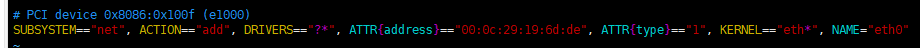
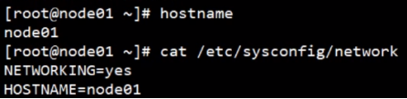

创建已经做好基本配置的虚拟机，用来被克隆
网络、必要的软件(jdk、hadoop)、chkconfig、用户创建权限设置、rsync脚本

DEVICE=eth0
TYPE=Ethernet
ONBOOT=yes
NM_CONTROLLED=yes
BOOTPROTO=static
IPADDR=192.168.100.100
NETMASK=255.255.255.0
GATEWAY=192.168.100.2
DNS1=114.114.114.114
DNS2=8.8.8.8
127.0.0.1 localhost localhost.localdomain localhost4 localhost4.localdomain4
::1 localhost localhost.localdomain localhost6 localhost6.localdomain6
192.168.100.100 standard
192.168.100.101 node101
192.168.100.102 node102
192.168.100.103 node103
192.168.100.104 node104
192.168.100.105 node105
192.168.100.106 node106
192.168.100.107 node107
192.168.100.108 node108
192.168.100.109 node109
192.168.100.110 node110

vim /etc/sudoers
scp -r 源 目的地
如果源和目的地不是本机，用以下形式表示：用户@主机名colon路径
可以在源主机、目标主机、第三方执行，只要指定源和目标即可
rsync | -rvl | $pdir/$fname | $user@hadoop$host:$pdir/$fname |
命令 | 选项参数 | 要拷贝的文件路径/名称 | 目的用户@主机:目的路径/名称 |
选项 | 功能 |
-r | 递归 |
-v | 显示复制过程 |
-l | 拷贝符号连接 |
#!/bin/bash
#1 获取输入参数个数，如果没有参数，直接退出
pcount=$#
if((pcount==0)); then
echo no args;
exit;
fi
#2 获取文件名称
p1=$1
fname=`basename $p1`
echo fname=$fname
#3 获取上级目录到绝对路径
pdir=`cd -P $(dirname $p1); pwd`
echo pdir=$pdir
#4 获取当前用户名称
user=`whoami`
#5 循环
for((host=101; host<105; host++)); do
echo ------------------- node$host --------------
rsync -rvl $pdir/$fname $user@node$host:$pdir
done
chmod 777 rrsync
rrsync 要同步的文件的绝对路径